Shakshat Virtual Lab 
INDIAN INSTITUTE OF TECHNOLOGY GUWAHATI
Theory of RTD (Resistance Temperature Detector)
An RTD (resistance temperature detector) is a temperature detector based upon a variation in electric resistance. The commonest metal for this application is platinum. RTDs rely on the positive temperature coefficient for a conductor’s resistance. In a conductor the number of electrons available to conduct electricity does not significantly change with temperature. But when the temperature increases, the vibration of atoms around their equilibrium positions increase in amplitude. This result in a greater dispersion of electrons, which reduces their average speed. Hence, the resistance increases when the temperature rises.
The relationship between temperature and resistance of RTD is given by-
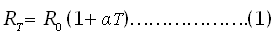
where 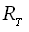is resistance at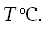
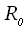is resistance at 0ºC, and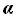is temperature coefficient of resistance.represents the change in resistance per degree centigrade change in temperature. For example, Pt100 is platinum RTD with resistanceof 100 Ω at 0ºC. For platinum= 0.00385 and at 100 ºC, Pt100 will have a resistance of
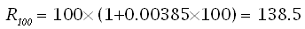Measurement of RTD with Wheatstone-Bridge Circuit
Mostly RTD instruments used Wheatstone bridge circuit for measurement purpose. Bridge contains RTD at one arm and other remaining three arms connected with standard resistances. Bridge is generally a resistance measuring device which converts the resistance of RTD into electrical signal.
Here the as mention above the equation (1) may be written as
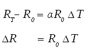For given values of and ,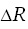and 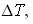, and hence measuring the(With the help of Wheatstone bridge circuit) change in temperature can be found out.
As shown in the fig. below
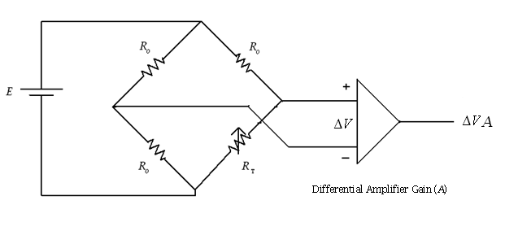To measure the out-put voltage of signal conditioning circuit for RTD, following equations are required-
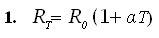
is the resistance of platinum,is the resistance at 0ºC,is the temperature coefficient of platinum wire and T is the temperature.
2.BRIDGE OUTPUT 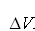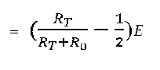
Here,is the resistance of platinum wire andare the standard resistances and E is the input voltage applied to the bridge.
3. Differential amplifier output 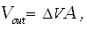
where A is the voltage gain of the amplifier